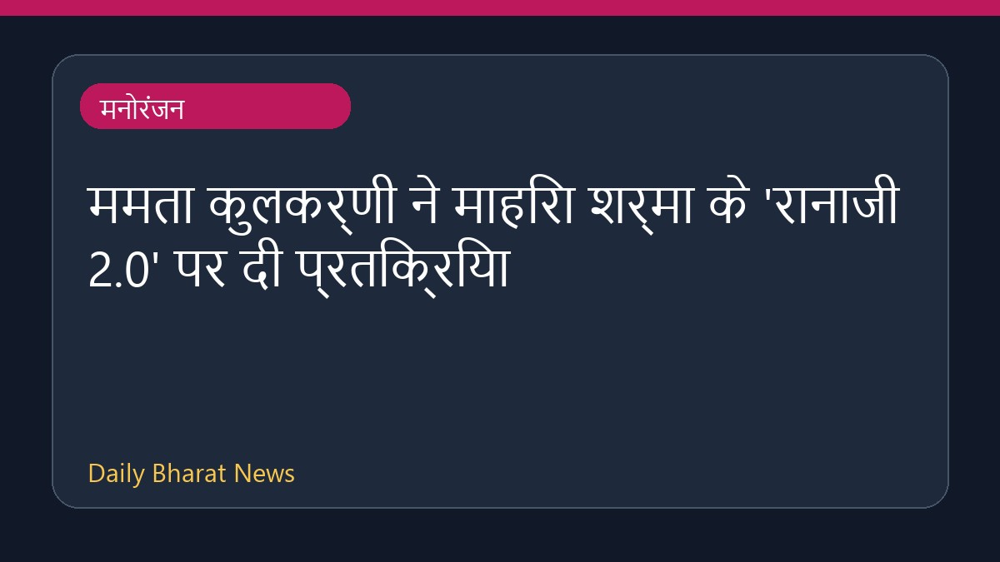

ममता कुलकर्णी ने माहिरा शर्मा के 'रानाजी 2.0' पर दी प्रतिक्रिया

ममता कुलकर्णी ने माहिरा शर्मा के नए गाने 'रानाजी 2.0' पर अपनी प्रतिक्रिया व्यक्त करते हुए कहा है कि इस गाने का ओरिजिनल वर्जन लोगों के दिलों में बसा हुआ है। इस बीच, सोशल मीडिया पर माहिरा शर्मा के इस नए गाने में भावों की कमी को लेकर नेटिज़न्स द्वारा उनकी आलोचना की जा रही है और इसे लेकर कई तरह की प्रतिक्रियाएं सामने आ रही हैं। इस गाने के आने के बाद कला और उत्पाद को लेकर भी बहस छिड़ गई है।
मूल स्रोत: Entertainment Sources
Mamta Kulkarni reacts to Mahira Sharma's 'Ranaji 2.0': ‘The original is etched in people’s minds’ - The Times of India ↗
Mamta Kulkarni reacts to Mahira Sharma's 'Ranaji 2.0': ‘The original is etched in people’s minds’ - The Times of India ↗